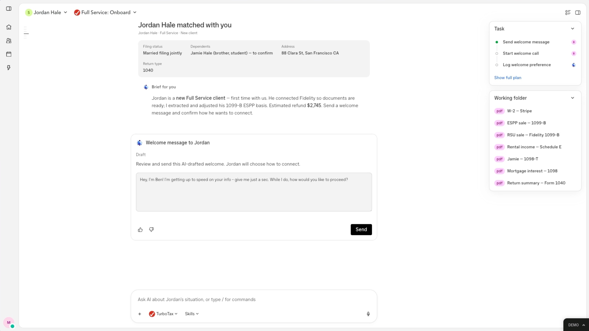
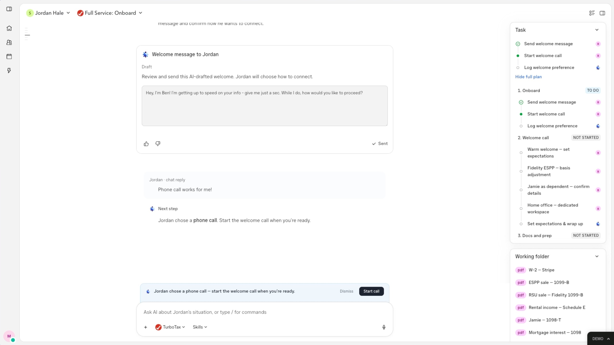
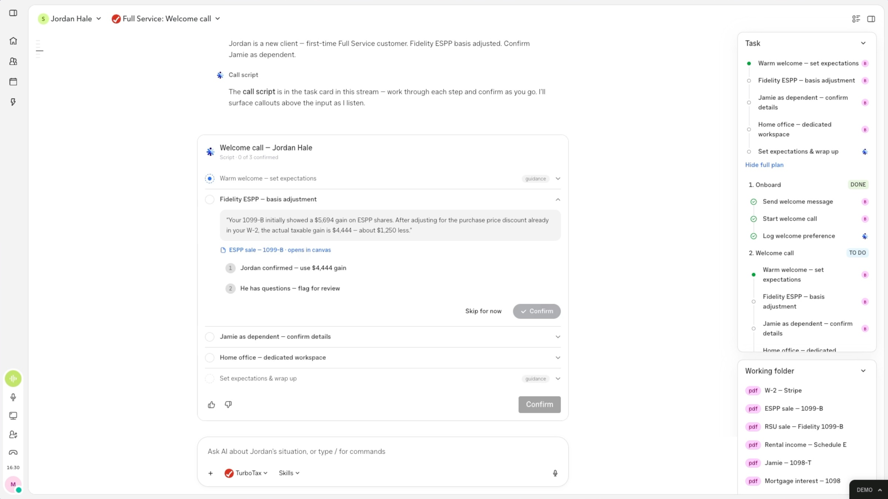

Intuit · Expert Co-Pilot · 2024–Present
Atlas AI-Powered Workspace
The evolution of Expert Co-Pilot — from AI assistance to AI agency.
Intuit · Expert Co-Pilot · 2024–Present
The evolution of Expert Co-Pilot — from AI assistance to AI agency.
The Problem
Today's experts drive every action across disconnected tools — IEP, Slack, Outlook, internal systems — while AI helps task-by-task. The ceiling is the expert's bandwidth, not the AI's capability.
The Vision
Atlas is a unified workspace where agents do the work and experts manage — built as a native app that connects to dependencies, powered by a framework any team can extend.
01
New Mental Model
Agents do the work. Experts manage. The shift from operator to orchestrator.
02
Native App Architecture
Connect to dependencies. Don't build within them. Ship fast with full control.
03
Framework-Driven SDLC
Load an expertise file. Atlas does the rest. Any team can extend — no sprints needed.
Product Demo
The expert's day starts on a dashboard that splits customers into what needs their input and what AI is already working on. When a new client arrives, Atlas has already pulled their documents, adjusted the ESPP basis, estimated the refund, and drafted a welcome message. Once the client chooses a phone call, the plan becomes a live call script the expert confirms step by step.




Early Lo-Fi Prototypes
Before the build above, these lo-fi prototypes tested the first journey we explored: orient on account context, run the live discovery call with AI support, generate the upgrade proposal, and carry that context into an actionable customer record.


How It Works
Atlas sits at the center, connecting to integrated products via API. Experts give intent — Atlas executes across systems. A Framework Layer underneath lets teams load .md expertise files to extend Atlas to new domains without feature builds.
Integrations
Framework Layer
Use Cases
Tax Pro
Atlas drafts the email, schedules a 15-min call in Outlook, and logs the action in IEP — one command.
Bookkeeper
Atlas pulls customer context from IEP, surfaces recent Slack threads, and assembles a summary brief — expert reviews and goes.
CSM
Atlas moves the calendar event, drafts a Slack DM to the internal team, and sends a client email — all confirmed with one approval.
New Team
Atlas immediately supports payroll workflows — no feature requests, no sprint cycles. Author expertise, not code.
What Changes
| Today | With Atlas |
|---|---|
| Experts drive every action manually | Agents execute, experts approve |
| AI helps with single tasks in isolation | AI works across systems in one flow |
| Context lost between tools | Continuous context across every tool |
| Each team builds features from scratch | Teams author expertise files, not features |
| SDLC bottleneck: build → test → deploy per feature | New SDLC: write .md → load → validate |
Design Process
Atlas didn't start as a product spec — it started as a question: what if the product development lifecycle itself was redesigned around AI? I structured a series of cross-functional workshops with PM, PD, and design partners to prototype the workflow live, with the Atlas concept emerging from the practice.
PM, XD, and PD co-designed a new AI-augmented process — from Discover → Diverge → Build → Cycle. Shipped three decks: Vision, Exec Pitch, and Workshop Playbook. Established a two-tier context model (shared templates + private agent expertise) and a push → review → learn feedback loop.
Put the workflow into practice on a real initiative. Parallel agent exploration became a team learning exercise — not me teaching, but all three disciplines discovering AI capabilities alongside each other. FigJam board with color-coded activities kept the session legible.
1.5-day workshop testing the build half of the flow. PM plays Orchestrator (prototype → Jira stories with AI assist). PD plays Executor (builds from stories, Slacks when blocked). I respond to design pings and push UI PRs.
Ideas were too exploratory for detailed specs. So the team pivoted: PM writes one paragraph, XD prototypes immediately, prototype becomes the living artifact.
From that pivot, the AI Orchestrator + Executor pattern emerged — far more ambitious than the manual tag-team we'd originally imagined. A working Expert Copilot prototype and a refined 9-step process flow came out of a single session.
Scope & Next Steps
01
This presentation
02
Expertise file structure + principles
03
Core integrations + 1 expert type
04
Test with real workflows
05
Load additional expertise files